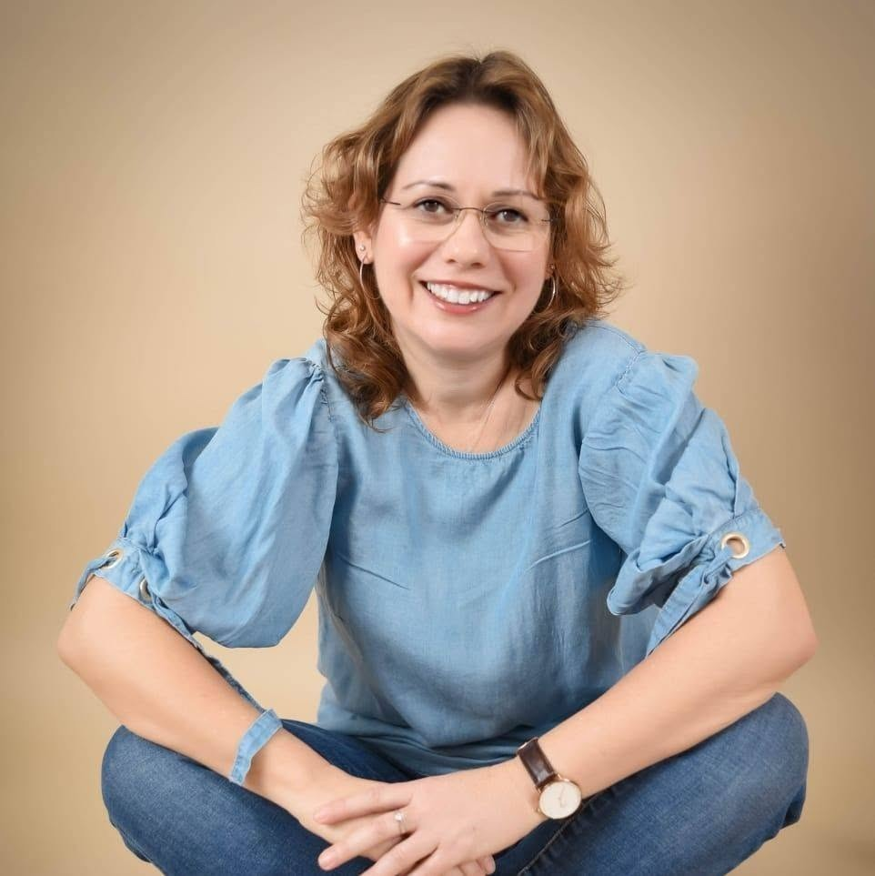
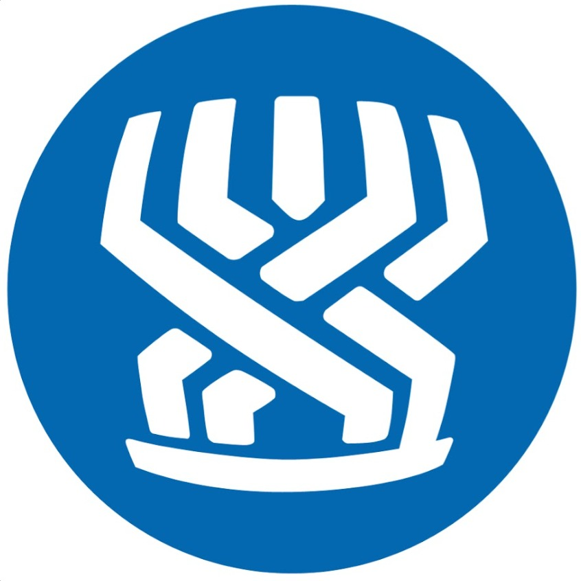
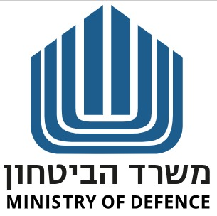
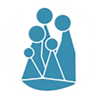
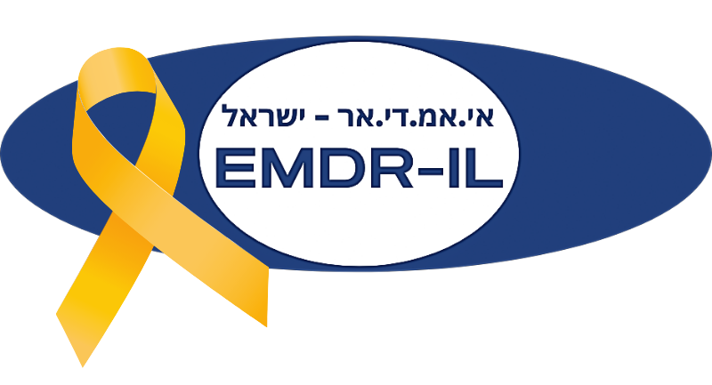

הגישה הטיפולית שלי
אני מאמינה כי ריפוי וצמיחה מתרחשים בתוך קשר אנושי מיטיב המבוסס על אמון, כנות והקשבה. עבורי, הטיפול הוא מפגש בגובה העיניים, שבו אני מביאה את הידע והניסיון המקצועי שלי, בעוד המטופל הוא המומחה לחייו ולקצב הנכון עבורו.
אני רואה בסימפטומים ביטוי לעולמה של הנפש ולא את הבעיה עצמה. מתוך סקרנות וחמלה, אנו לומדים להקשיב למה שהם מבקשים לספר. אני מאמינה כי צמיחה נפשית מתרחשת כאשר אנו מכירים ומקבלים את מכלול חלקינו – גם את אלו שקל לנו לאהוב וגם את אלו שקשה לנו לפגוש.
אני מאמינה שהכוחות הדרושים לשינוי כבר קיימים בתוך האדם. תפקידי הוא לסייע לגלות אותם מחדש. אני רואה זכות גדולה ללוות אנשים לאורך חלק מהדרך, עד שיוכלו להתחבר לקולם הפנימי, לסמוך עליו ולהמשיך את דרכם מתוך יותר חופש, תקווה וחיבור לעצמם.

במי אני מטפלת?
זוגות ומשפחות
זוגות ומשפחות המתמודדים עם קשיי תקשורת, קונפליקטים ומשברים.
יחידים
יחידים המתמודדים עם חרדה, דיכאון, קשיי הורות, הליכי פרידה, משברי חיים וקשיים במערכות יחסים.
נוער ומבוגרים
מטפלת בנוער מגיל 12 ומעלה ובמבוגרים בכל שלבי החיים.
תחומי ההתמחות שלי
טיפול זוגי
מרחב בטוח וניטרלי לשיקום ולחיזוק הקשר הזוגי. זיהוי דפוסי תקשורת מעכבים, בניית אמון מחדש והעמקת האינטימיות.
טיפול משפחתי
התערבות הרואה במשפחה מערכת שלמה. שיפור הדינמיקה והתקשורת המשפחתית וחיזוק הקשרים בין כל בני המשפחה.
EMDR
גישה ממוקדת ויעילה לעיבוד טראומות, חרדות ומשברים. מסייעת למוח לעבד מחדש זיכרונות קשים ולהביא להקלה.
טיפול באומנות
ביטוי רגשי דרך יצירה, צבע וחומר. עיבוד חוויות מורכבות וחקירת העולם הפנימי בסביבה לא שיפוטית.
טיפול אנליטי יונגיאני
מסע מעמיק אל הנפש והלא-מודע. חקר חלומות, סמלים וארכיטיפים להבנה עצמית עמוקה ומימוש הפוטנציאל האישי.
טיפול פסיכודינמי בילד ומתבגר
טיפול רגשי המותאם לשלבי ההתפתחות. סיוע בקשיים חברתיים, חרדות, דימוי עצמי ומשברי גיל ההתבגרות.
טיפול בנפגעי פגיעה מינית
טיפול מומחה, רגיש ומוגן לילדים ונוער. שיקום תחושת השליטה, הפחתת תסמיני פוסט-טראומה וחזרה לתפקוד.
הכרה מקצועית
ספקית מוכרת

המוסד לביטוח לאומי
ספקית מוכרת ומורשית

משרד הביטחון
אגף שיקום ואגף משפחות והנצחה
חברות באיגודים מקצועיים

האגודה הישראלית לטיפול זוגי ומשפחתי
חברה ומוסמכת

עמותת EMDR ישראל
חברה ומוסמכת
השכלה וניסיון קליני
הכשרה מקצועית
- פסיכותרפיסטית אנליטית בגישה היונגיאנית (3 שנות לימוד, סמינר הקיבוצים)
- הכשרה מלאה ב-EMDR (שלבים 1 ו-2)
- בוגרת התוכנית לפסיכותרפיה קבוצתית בגישה הפסיכואנליטית (פקולטה לרפואה, אוניברסיטת ת"א)
- תואר שני בהצטיינות יתרה (מצטיינת דיקן) בטיפול באומנות (מכללת בית-ברל)
- הכשרה בטיפול בילדים ובני נוער נפגעי פגיעה מינית (מרכז דימול)
- בוגרת התוכנית לטיפול פסיכודינמי בילד ונוער (אוניברסיטת בר-אילן)
- בוגרת התוכנית לטיפול זוגי ומשפחתי (אוניברסיטת בר-אילן)
- הכשרה בתיאום הורי (להורים גרושים/פרודים בסכסוך מתמשך)
- תואר שני (M.A) בייעוץ חינוכי, בהצטיינות
- תרפיסטית באומנות (3 שנות לימוד, מכללת בית-ברל)
- מוסמכת בהדרכת תיאטרון בובות ודרמה חינוכית
- תואר ראשון (B.A) בחינוך מיוחד, התמחות בהפרעות התנהגות (מכללת בית-ברל)
ניסיון מקצועי
- מטפלת זוגית ומשפחתית מוסמכת מטעם האגודה לטיפול זוגי ומשפחתי
- מומחית תחום הפרעות נפשיות במת"י פ"ת
- מטפלת משפחתית ומדריכת קבוצות ילדים, מרכז לבריאות הנפש גהה
- מנהלת קבוצת הפייסבוק "מתייעצים עם פסיכולוגים ופסיכותרפיסטים" (מעל 80,000 חברים)
- הנחיית קבוצת הורים בהליכי פרידה, קריית אונו
- קליניקה פרטית בפ"ת – טיפול ביחידים, זוגות ומשפחות
- טיפול בילדים ובני נוער נפגעים מינית, פתח תקווה
- מדריכת סטודנטים בהכשרה של תואר שני בטיפול באמצעות אומנות
- תרפיסטית באומנות בבתי ספר יסודיים וחטיבות ביניים
- טיפול רגשי בילדים על הרצף האוטיסטי ובילדים עם לקויות למידה
יצירת קשר
פרטי התקשרות
אשמח לענות על כל שאלה ולתאם פגישת היכרות